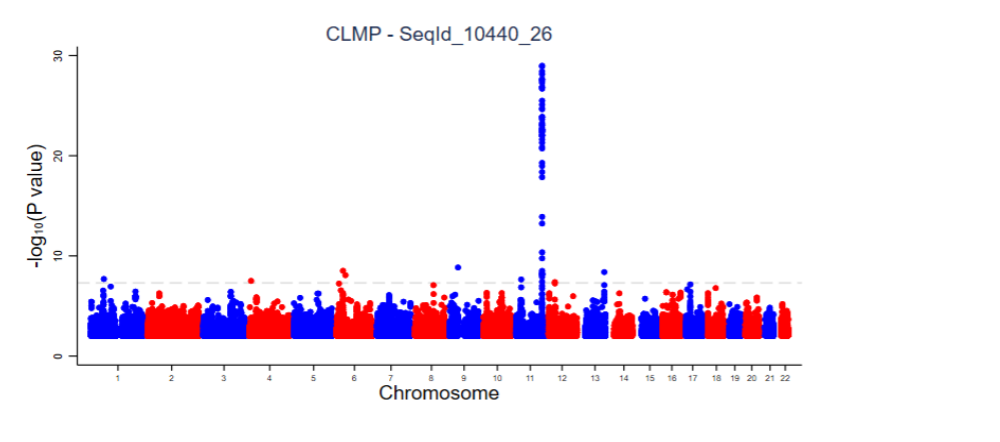

GWAS of AASK Proteins
What is GWAS?
The genome-wide association study (GWAS) is a powerful tool to study genetic determinants of disease traits and generate insights into disease pathophysiology. What you do for a genome-wide association study is find a lot of people who have the disease, a lot of people who don't, and who are otherwise well matched. And then, searching across the entire genome using SNPs, you try to find a place where there is a consistent difference.
What package did we use? What are the steps to perform a GWAS?
We used FAST.2.4 R package [Read more]
The steps are:
1. Prepare Input Genotype Data in FAST format, individual id file (option --indiv-file), Phenotype + Covariate File (option --trait-file). Note that For both single SNP and gene-based Cox methods, the phenotype file requires 7 mandatory columns: Family ID, Individual ID, Paternal ID, Maternal ID, Sex (1=male; 2=female; other=unknown), Status, Time to Event. Details refer to: https://bitbucket.org/baderlab/fast/wiki/InputFileFormats
2. Run GWAS with FAST package
3. perform QC (quality control) to filter MAF > 0.05 and produce Manhattan plot.
What are the outputs? How do we interpret them?

The graph above is a Manhattan plot, it's the main output from a GWAS study. The x-axis of the graph represents each of the 23 chromosomes, and the y-axia is the negative log of p-value. Each dot represents a SNP. As we can see from the graph, there's a peak on chromosome 11, we can conclude that there's a 'hit' on chromosome 11, negative logarithm of the association p-value for each single nucleotide polymorphism (SNP) displayed on the y-axis, meaning that a block of SNPs on chromosome 11 made the difference of the protein level for group of people with disease and the control group.
How did we apply GWAS on real world problems?
[A paper we published on 2021]
We quantified the association between 4877 plasma proteins and a composite outcome of ESKD or decline in eGFR by ≥50% among 9406 participants in the Atherosclerosis Risk in Communities (ARIC) Study. For validation, we evaluated proteins with significant associations (false discovery rate <5%) in both time periods in 3249 participants in the Chronic Renal Insufficiency Cohort (CRIC) and 703 participants in the African American Study of Kidney Disease and Hypertension (AASK).
In models adjusted for multiple covariates, including baseline eGFR and albuminuria, we identified 13 distinct proteins that were significantly associated with the composite end point in both time periods, including TNF receptor superfamily members 1A and 1B, trefoil factor 3, and β-trace protein. Of these proteins, 12 were also significantly associated in CRIC, and nine were significantly associated in AASK. Higher levels of each protein associated with higher risk of 50% eGFR decline or ESKD.